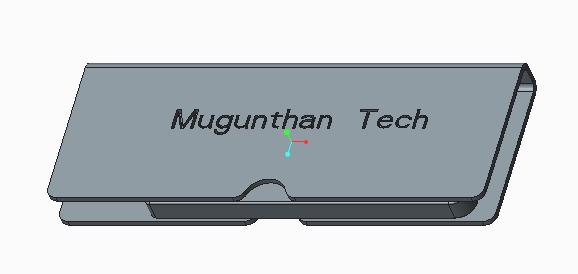
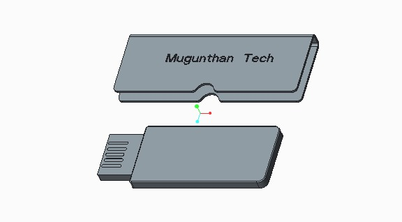

In this Computer Aided Design project, I created the design of a storage drive matching the manufacturer specifications.
The storage drive has an outer casing and an inner body.
The outer casing is made of sheet metal with bending and forming operations performed on it.

The above image is the isometric view of the storage drive assembly.
The inner body is latched on to the outer casing at one end.

The above image is the exploded view of the storage drive assembly.
The CAD models of both the inner body and the outer casing are made to scale.
Both the models can be easily converted into a high-fidelity prototype using SLA or FDM printers.
The outer casing model can be easily converted into g-code programming and can be loaded into the laser cutting machine for sheet metal operation.